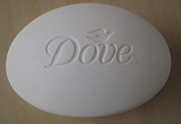

Stearic acid (stair-ik or steer-ik) is a saturated fatty acid with an 18-carbon chain and has the IUPAC name octadecanoic acid.
It is a waxy solid and its chemical formula is C17H35CO2H.
The salts and esters of stearic acid are called stearates.
As its ester, stearic acid is one of the most common saturated fatty acids found in nature following palmitic acid.
The triglyceride derived from three molecules of stearic acid is called stearin.
In general, the applications of stearic acid exploit its bifunctional character, with a polar head group that can be attached to metal cations and a nonpolar chain that confers solubility in organic solvents.
The combination leads to uses as a surfactant and softening agent.
Stearic acid undergoes the typical reactions of saturated carboxylic acids, a notable one being reduction to stearyl alcohol, and esterification with a range of alcohols.
This is used in a large range of manufactures, from simple to complex electronic devices.
Stearyl alcohol (also known as octadecyl alcohol or 1-octadecanol) is an organic compound with the formula CH3(CH2)16CH2OH.
It is classified as a fatty alcohol. It takes the form of white granules or flakes, which are insoluble in water.
It has a wide range of uses as an ingredient in lubricants, resins, perfumes and cosmetics.
It is used as an emollient, emulsifier, and thickener in ointments of various sorts, and is widely used as a hair coating in shampoos and hair conditioners.
It has also found application as an evaporation suppressing monolayer when applied to the surface of water.
Stearyl alcohol is prepared from stearic acid or some fats by the process of catalytic hydrogenation. It has low toxicity.
Sodium stearate C18H35NaO2 is the sodium salt of stearic acid.
This white solid is the most common soap. It is found in many types of solid deodorants, rubbers, latex paints, and inks. It is also a component of some food additives and food flavorings.
